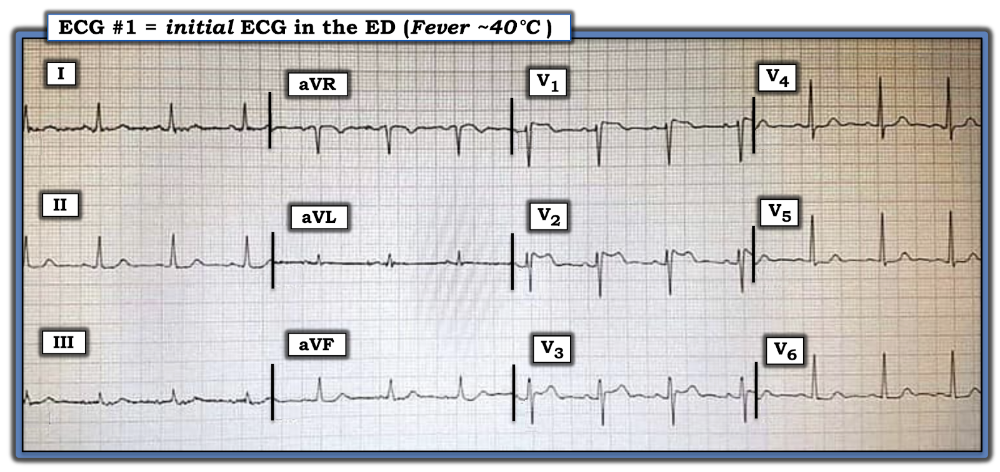
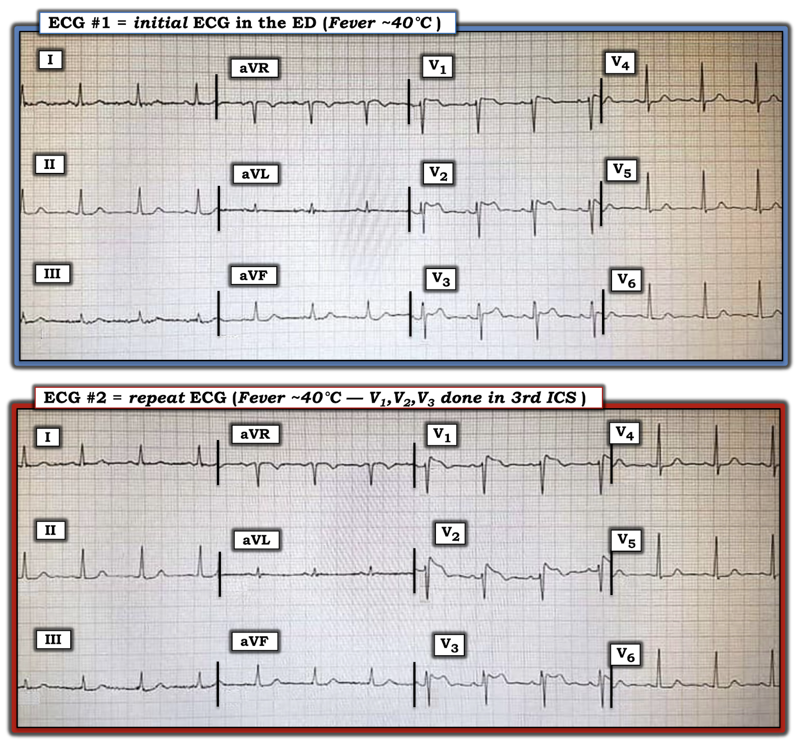
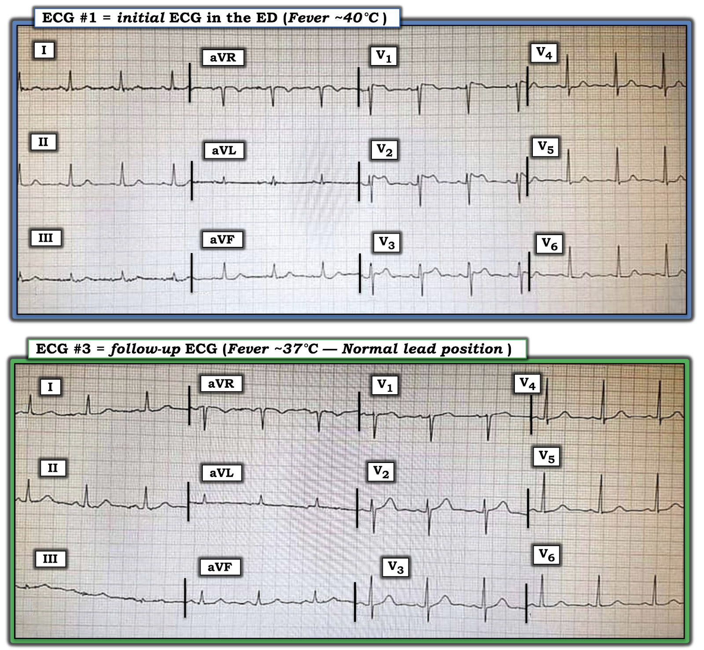
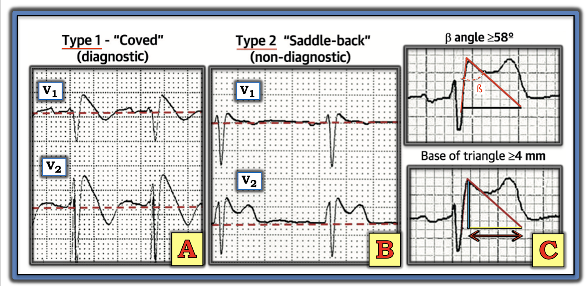
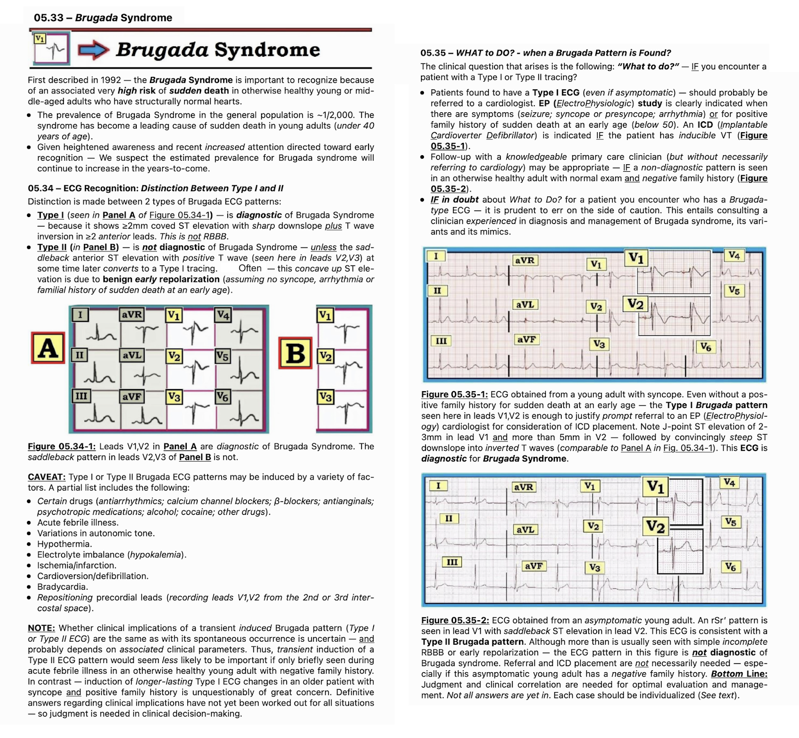
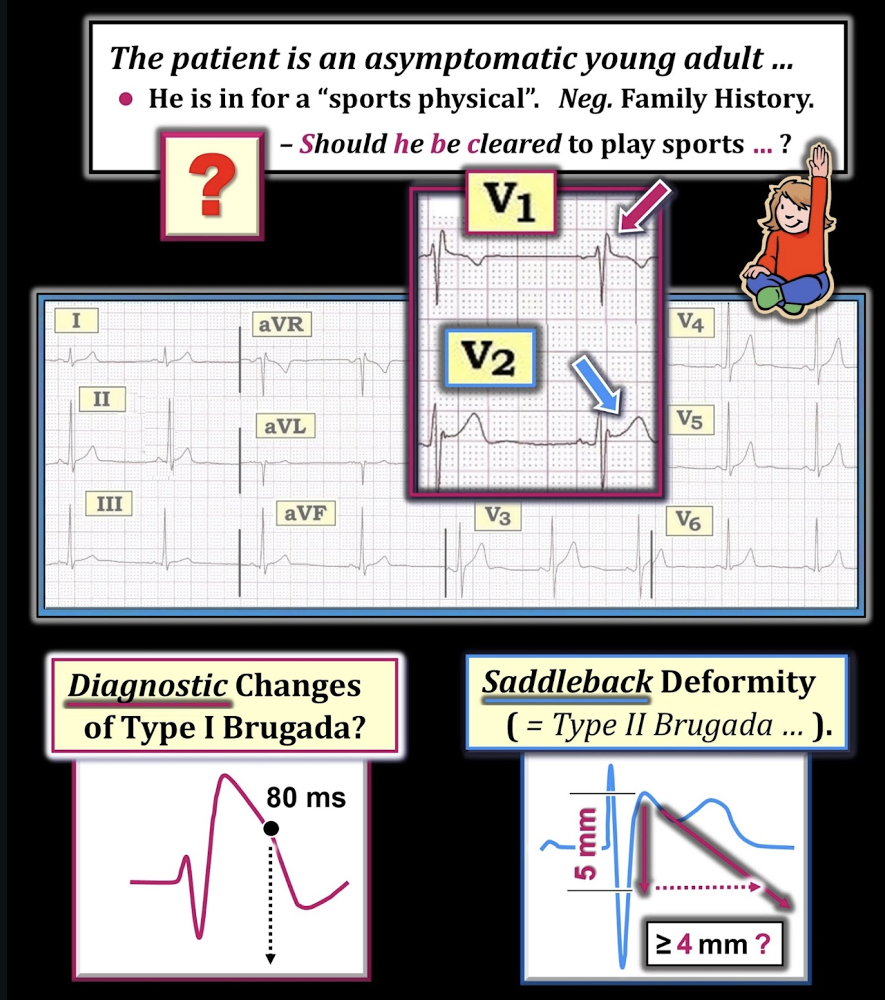

ECG Blog #238 (53) — Kiểu hình sao chép (Phenocopy) là gì?
Điện tâm đồ trong Hình-1 được ghi ở một phụ nữ lớn tuổi đến ED (khoa Cấp cứu – Emergency Department) vì một bệnh lý sốt cấp tính (40°C).
- Bạn đọc điện tâm đồ ban đầu của bà như thế nào?
- Về lâm sàng — Liệu đây có thể là một STEMI trước vách cấp giai đoạn sớm?


Ca bệnh tiếp diễn:
Điện tâm đồ được ghi lại (Hình-2) — lần này các chuyển đạo trước tim được đặt cao hơn 1 khoang liên sườn.


CÂU HỎI:
- Các bản ghi nối tiếp này có gợi ý một STEMI thành trước cấp đang tiến triển không?
=======================================
LƯU Ý: Đến đây, một số bạn đọc có thể muốn tham khảo ECG Media PEARL #53 trước khi đọc Suy nghĩ của tôi về các điện tâm đồ trong Hình-2. Video ECG gồm 2 phần này (9 phút và 8 phút) — ôn lại cách nhận diện trên điện tâm đồ và ý nghĩa lâm sàng của các hình ảnh điện tâm đồ Brugada-1 và Brugada-2 + làm rõ khái niệm kiểu hình sao chép Brugada (Brugada Phenocopy).
- Về một bài tổng quan cập nhật xuất sắc về hội chứng Brugada — BẤM VÀO ĐÂY (Brugada J và cs.: J Am Coll Cardiol 72(9) 1046-1059, 2018).
- Về một bài tổng quan về thực thể kiểu hình sao chép Brugada — BẤM VÀO ĐÂY (Anselm D và cs.: World Cardiol 6(3) 81-86-2014).
- Về một nghiên cứu ghi nhận việc các chuyên gia không thể phân biệt hình ảnh điện tâm đồ Brugada-1 do hội chứng Brugada với do kiểu hình sao chép Brugada — BẤM VÀO ĐÂY (Gottschalk và cs.: Europace 18, 1095-1100, 2016).
- Tóm tắt ngắn gọn phần kiến thức này — Xin xem Hình-5, -6 và -7 trong Phần bổ sung bên dưới.
=======================================

Trong Phần 1 của ECG Media Pearl #53 (9:00 phút Video) hôm nay — những điểm cốt yếu của hội chứng Brugada được ôn lại.
Trong Phần 2 của ECG Media Pearl #53 (8:00 phút Video) hôm nay — những điểm cốt yếu này được áp dụng vào lâm sàng.
=======================================
SUY NGHĨ CỦA TÔI về ca này:
Trước hết xem điện tâm đồ trong Hình-1 — Nhịp là nhịp xoang — mọi khoảng (PR, QRS, QTc) và trục đều bình thường — và không có lớn buồng tim.
Về Thay đổi Q-R-S-T trong Hình-1:
- Không có sóng Q.
- Tăng tiến sóng R bình thường, với vùng chuyển tiếp (nơi sóng R trở nên cao hơn độ sâu của sóng S) xuất hiện bình thường ở khoảng giữa chuyển đạo V3 và V4.
- Về đoạn ST và sóng T — bất thường nổi bật nhất là ST chênh lên ở chuyển đạo V1, V2 và V3, với dạng lõm hướng lên "hai bướu" (double-hump) ở chuyển đạo V3.
- Đoạn ST dẹt rõ ở nhiều chuyển đạo chi — cũng như ở các chuyển đạo ngực bên (vốn cũng có ST chênh xuống nhẹ).
Nhận định của tôi về điện tâm đồ #1: Không thể phủ nhận có ST chênh lên ở thành trước, kèm đoạn ST dẹt và ST chênh xuống nhẹ ở các chuyển đạo khác.
- Tuy vậy — Chống lại khả năng các thay đổi ST-T này ở điện tâm đồ #1 phản ánh một biến cố tim cấp — là bệnh sử sốt cấp tính ở người phụ nữ lớn tuổi này, và bệnh sử không hề nhắc tới đau ngực kèm theo.
CÂU HỎI:
Điều gì đã xảy ra ở điện tâm đồ #2 (bản ghi phía dưới trong Hình-2)?
TRẢ LỜI:
Khác biệt chính giữa điện tâm đồ #1 và điện tâm đồ #2 là hình dạng sóng ST-T ở chuyển đạo V1, V2 và V3:
- Đỉnh R' ở chuyển đạo V1 và V2 cao hơn trong điện tâm đồ #2, với đoạn dốc xuống sắc nét dẫn vào một sóng T đảo ngược rõ rệt hơn.
- Dạng lõm hướng lên "hai bướu" của đoạn ST từng thấy ở chuyển đạo V2 của điện tâm đồ #1 — nay thấy ở chuyển đạo V3 của điện tâm đồ #2.
Nhận định của tôi về điện tâm đồ #2: Hình ảnh điện tâm đồ trong Hình-2 gợi ý mạnh rằng chúng ta đang thấy các hình ảnh điện tâm đồ Brugada.
- Dạng lõm hướng lên "hai bướu" của đoạn ST ở chuyển đạo V2 của điện tâm đồ #1 — phù hợp với hình ảnh Brugada-2 (tức "hình yên ngựa" (Saddleback) ).
- Hình dạng ST-T nhô cao hơn, dốc xuống đứng hơn ở chuyển đạo V1 và V2 của điện tâm đồ #2 — nay đạt tiêu chuẩn hình ảnh điện tâm đồ Brugada-1, còn hình ảnh Brugada-2 nay thấy ở chuyển đạo V3.
- Xét bệnh sử lâm sàng — điều này ít có khả năng là một STEMI trước vách cấp.
ĐIỂM THEN CHỐT (PEARL) #1: Hóa ra điện tâm đồ #2 được ghi lại ngay sau điện tâm đồ #1. Điều này minh họa việc chỉ đơn giản đặt các chuyển đạo trước tim cao hơn 1 hoặc 2 khoang liên sườn trên thành ngực có thể làm lộ rõ hình ảnh điện tâm đồ Brugada!
Ca bệnh tiếp diễn:
Bệnh nhân được điều trị bệnh lý sốt cấp tính. Điện tâm đồ được ghi lại sau khi hết sốt (Hình-3).


CÂU HỎI:
Bệnh nhân trong ca hôm nay có bị hội chứng Brugada không?
THẾ NÀO là Hội chứng Brugada?
Được mô tả lần đầu năm 1992 — hội chứng Brugada cần được nhận diện vì đi kèm nguy cơ rất cao bị đột tử (sudden death) ở những người trẻ hoặc trung niên vốn khỏe mạnh, có tim bình thường về cấu trúc.
- Tỷ lệ hiện mắc hội chứng Brugada trong dân số chung là ~1/2.000. Hội chứng này đã trở thành một nguyên nhân hàng đầu gây đột tử ở người trẻ (dưới 40 tuổi).
- ĐIỂM THEN CHỐT (PEARL) #2: Hội chứng Brugada phổ biến hơn nhiều ở Đông Nam Á so với phần còn lại của thế giới. Khi nghĩ tới khả năng mắc hội chứng này — đặc điểm nhân khẩu học của bệnh nhân là quan trọng! (Xem Hình-6 trong Phần bổ sung bên dưới).
- ĐIỂM THEN CHỐT (PEARL) #3: Dù di truyền học của hội chứng Brugada khá phức tạp — giới tính của bệnh nhân cũng quan trọng. Hội chứng này có ưu thế rõ rệt ở nam giới.
Chiêm nghiệm cá nhân: Tôi chưa từng được học về hội chứng Brugada ở trường y (khi đó hội chứng này còn chưa được mô tả). Nhưng đặc biệt trong 10 năm qua, khi tôi theo dõi sát nhiều diễn đàn điện tâm đồ quốc tế trên internet — tôi đã thấy vô số ca, nhất là các hình ảnh điện tâm đồ Brugada thoáng qua tương tự ca hôm nay.
- Một khi một thực thể lâm sàng được "khám phá" — nó bắt đầu được nhận ra với tần suất ngày càng tăng.
Về Hội chứng BRUGADA so với Kiểu hình sao chép (Phenocopy):
Tôi dẫn một bài tổng quan cập nhật xuất sắc về hội chứng Brugada (Brugada J và cs.: J Am Coll Cardiol 72(9) 1046-1059, 2018). Tôi đã tổng hợp những điểm chính của bài này:
- Hình ảnh điện tâm đồ Brugada típ 1 được chẩn đoán khi thấy ST chênh lên ≥2 mm ở một hoặc nhiều chuyển đạo trước tim phải (tức V1, V2, V3) — theo sau là sóng r’ và đoạn ST dạng vòm (coved) hoặc thẳng — trong đó đoạn ST cắt qua đường đẳng điện và kết thúc bằng một sóng T âm (Xem Ô A trong Hình-4).
- Hình ảnh Brugada-1 có thể được quan sát thấy tự phát (khi chuyển đạo V1 và/hoặc V2 đặt ở vị trí bình thường — hoặc — đặt cao hơn 1 hoặc 2 khoang liên sườn so với thường lệ) — hoặc — hình ảnh Brugada-1 có thể xuất hiện như một đáp ứng với nghiệm pháp kích thích bằng thuốc sau khi tiêm tĩnh mạch một thuốc chẹn kênh natri như ajmaline, flecainide hoặc procainamide.
- LƯU Ý: Trước đây, chẩn đoán hội chứng Brugada đòi hỏi không chỉ có hình ảnh điện tâm đồ Brugada-1 — mà còn phải có tiền sử đột tử, VT bền bỉ, ngất không do phế vị-mạch máu hoặc tiền sử gia đình có người đột tử khi còn trẻ. Định nghĩa này đã được thay đổi sau một hội đồng đồng thuận chuyên gia năm 2013 — nên hiện nay, để chẩn đoán hội chứng Brugada chỉ cần có hình ảnh điện tâm đồ Brugada-1 tự phát hoặc gây ra bằng thuốc (không cần thêm tiêu chuẩn nào khác).
- Ô B trong Hình-2 minh họa hình ảnh điện tâm đồ Brugada típ 2 hay "hình yên ngựa" (Saddleback). Hình ảnh này có thể gợi ý — nhưng tự nó không đủ chẩn đoán hội chứng Brugada (Xem Hình-4).


ĐIỂM THEN CHỐT (PEARL) #4: Nhiều tình trạng khác ngoài hội chứng Brugada có thể tạm thời tạo ra hình ảnh điện tâm đồ Brugada-1. Một danh sách chưa đầy đủ gồm:
- Một số thuốc (thuốc chống loạn nhịp; thuốc chẹn kênh canxi; thuốc chẹn ß; thuốc chống đau thắt ngực; thuốc hướng thần; rượu; cocaine; các thuốc khác).
- Bệnh lý sốt cấp tính.
- Thay đổi trương lực thần kinh tự chủ.
- Hạ thân nhiệt.
- Rối loạn điện giải (hạ kali máu; tăng kali máu).
- Thiếu máu cục bộ/nhồi máu.
- Sốc điện chuyển nhịp/khử rung.
- Nhịp chậm.
ĐIỂM MẤU CHỐT: Sự xuất hiện hình ảnh điện tâm đồ Brugada-1 hoặc Brugada-2 do một hoặc nhiều yếu tố nói trên — và hình ảnh Brugada này mất đi sau khi (các) yếu tố thúc đẩy được điều chỉnh — được gọi là kiểu hình sao chép Brugada (Brugada Phenocopy).
- Tầm quan trọng của việc biết đến hiện tượng kiểu hình sao chép Brugada này — là điều chỉnh tình trạng nền (tức bệnh lý sốt cấp tính trong ca hôm nay) có thể làm mất hình ảnh điện tâm đồ Brugada-1 — với tiên lượng dài hạn tốt hơn nhiều so với bệnh nhân mắc hội chứng Brugada thực sự (tức có thể không cần đặt ICD, trong khi nhiều khả năng sẽ cần nếu có hội chứng Brugada thực sự!).
- LƯU Ý: Để chắc chắn chẩn đoán kiểu hình sao chép Brugada — bệnh nhân cần có: i) Tiền sử gia đình không có đột tử; ii) Không có hình ảnh điện tâm đồ Brugada-1 ở người thân thế hệ thứ 1; iii) Không có tiền sử ngất, rối loạn nhịp nghiêm trọng, co giật hay thở hấp hối về đêm; và, iv) Nghiệm pháp kích thích bằng thuốc chẹn kênh natri âm tính.
==================================
Bình luận cuối cùng về ca hôm nay:
Giả sử người phụ nữ lớn tuổi trong ca hôm nay trước đó vốn khỏe mạnh (không có tiền sử bản thân ngất, rối loạn nhịp nghiêm trọng, co giật hay thở hấp hối về đêm) — việc hình ảnh điện tâm đồ Brugada-1 mà ta thấy lúc đầu mất đi hoàn toàn rất sớm sau khi hết sốt gợi ý mạnh rằng bà có kiểu hình sao chép Brugada (chứ không phải hội chứng Brugada) — và tiên lượng dài hạn của bà nhiều khả năng là tốt.
- Việc bà có cần làm nghiệm pháp kích thích bằng thuốc chẹn kênh natri để khẳng định âm tính ở tuổi cao như vậy hay không (và tiền sử gia đình có thể có ý nghĩa gì ở tuổi của bà) — là những vấn đề để bà, sau khi được giải thích đầy đủ, cùng các nhân viên y tế điều trị quyết định.
==================================
Lời cảm ơn: Xin cảm ơn 유영준 (Seoul, Hàn Quốc) đã giới thiệu cho tôi ca này và cho phép tôi sử dụng bản ghi.
==================================
Tài liệu tham khảo & các bài ECG Blog liên quan tới ca hôm nay:
- Về một bài tổng quan cập nhật xuất sắc về hội chứng Brugada — BẤM VÀO ĐÂY (Brugada J và cs.: J Am Coll Cardiol 72(9) 1046-1059, 2018).
- Về một bài tổng quan về thực thể kiểu hình sao chép Brugada — BẤM VÀO ĐÂY (Anselm D và cs.: World Cardiol 6(3) 81-86-2014).
- Về một nghiên cứu ghi nhận việc các chuyên gia không thể phân biệt hình ảnh điện tâm đồ Brugada-1 do hội chứng Brugada với do kiểu hình sao chép Brugada — BẤM VÀO ĐÂY (Gottschalk và cs.: Europace 18, 1095-1100, 2016).
- ECG Blog #50 — Một ca hội chứng Brugada.
- Bài đăng ngày 5 tháng 9 năm 2020 trên Dr. Smith's ECG Blog (Xin cuộn xuống cuối trang để xem Bình luận của tôi). Ca này là một ví dụ về kiểu hình sao chép Brugada do tăng kali máu.
- Bài đăng ngày 6 tháng 5 năm 2019 trên Dr. Smith's ECG Blog (Xin cuộn xuống cuối trang để xem Bình luận của tôi). Ca này bàn về một ví dụ trong đó rất khó phân biệt giữa kiểu hình sao chép Brugada với một STEMI cấp đang diễn tiến.
- Bài đăng ngày 8 tháng 9 năm 2019 trên Dr. Smith's ECG Blog (Xin cuộn xuống cuối trang để xem Bình luận của tôi). Ca này bàn về một ví dụ khác về kiểu hình sao chép Brugada do tăng kali máu.
==================================
PHẦN BỔ SUNG (ngày 1 tháng 7 năm 2021): Tóm tắt kiến thức về hội chứng Brugada:




